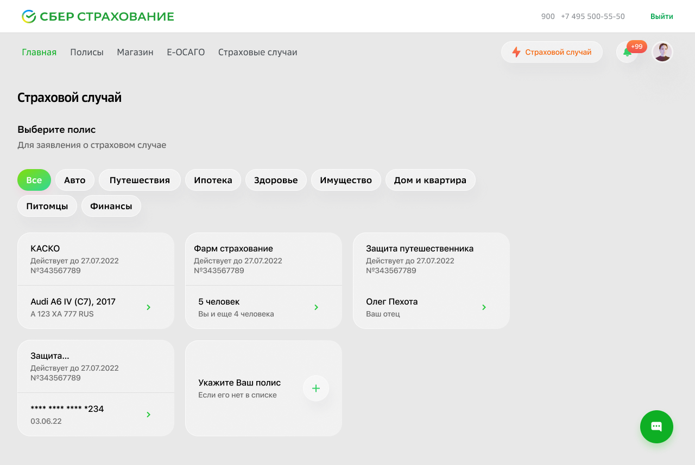
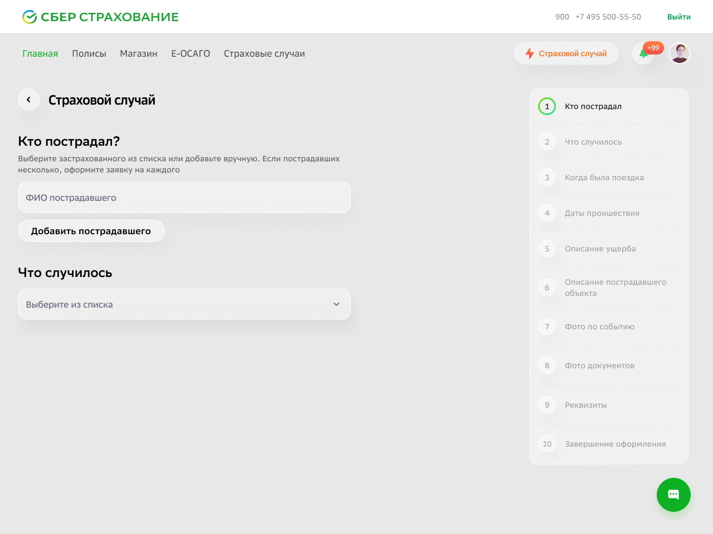
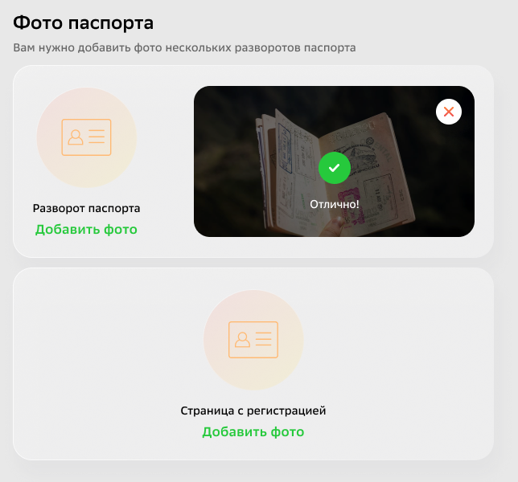
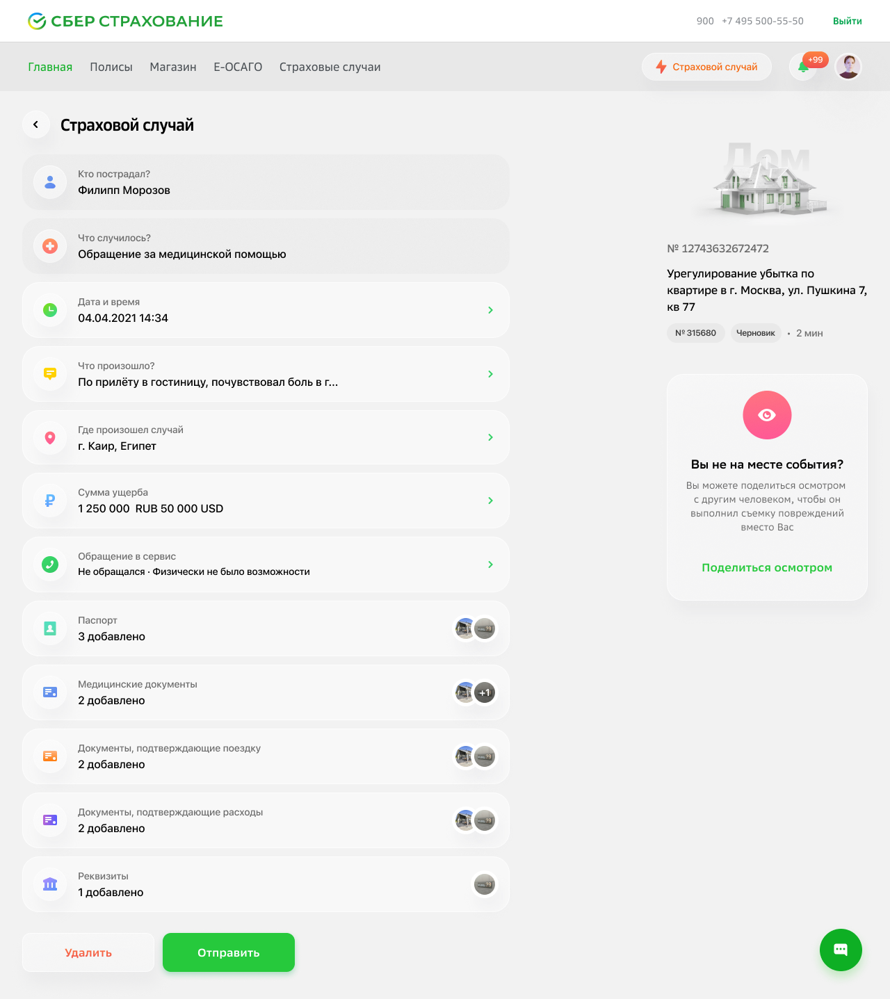
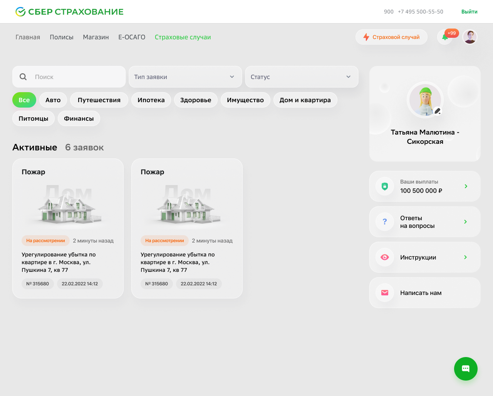
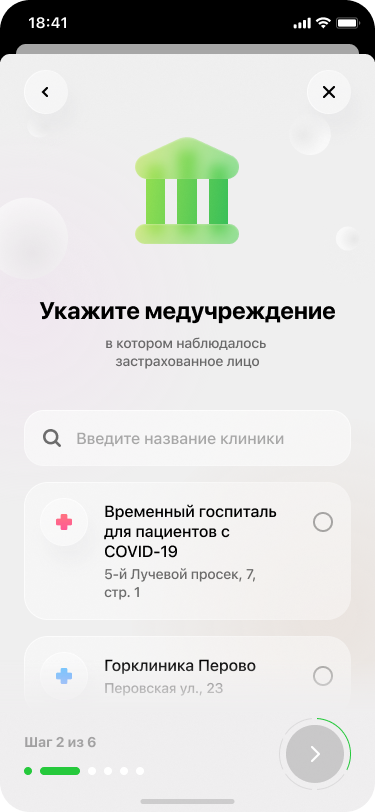
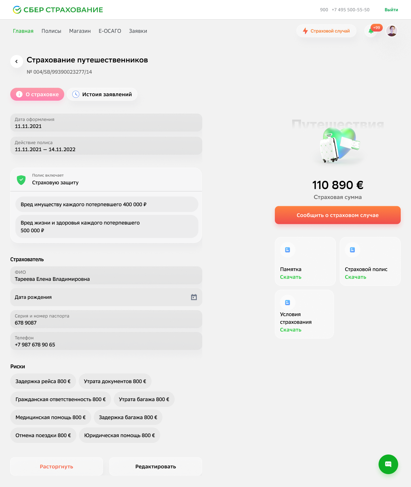
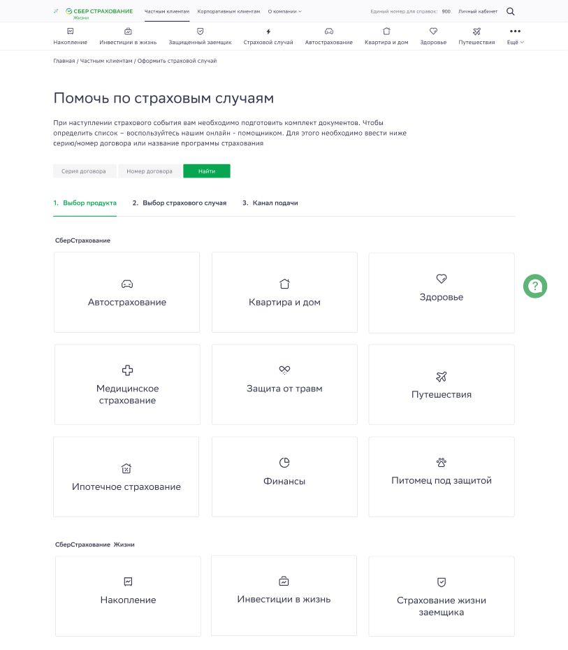
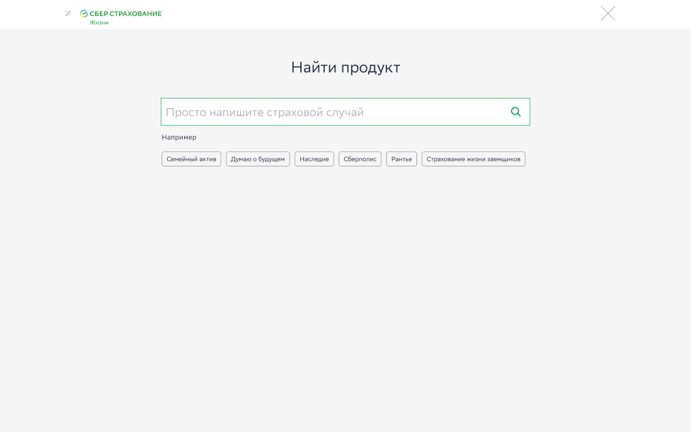

Сбер Страхование: подать заявление о страховом случае онлайн
Личный кабинет клиента и сайты «Сбербанк страхование» и «Сбербанк страхование жизни». Главный сценарий проекта: человек попал в страховой случай и должен быстро подать заявление и понять, какие документы нужны.
Роль
Руководитель UX/UI-группы
Что делал
Получал продуктовую задачу и требования, проектировал и отрисовывал макеты; ставил задачи дизайнеру группы и контролировал их выполнение
Платформы
Десктоп 1280, планшет 744, мобильный 320–375
Результат
+15% к конверсии сайта после редизайна
[ процесс ]
Как была устроена работа
01Продуктовая задача и требования
02Сценарий и макеты в трёх размерах
03Проверка макетов на интервью с пользователями
04Правки и передача в разработку
[ главный сценарий ]
Сообщить о страховом случае
Пример из макетов: застрахованному стало плохо в поездке, нужно вернуть расходы на лечение.
1Вход в сценарий и выбор полиса
Кнопка «Страховой случай» всегда в шапке кабинета, вторая точка входа есть в карточке полиса. Человек в стрессе не должен искать, где подать заявление. Дальше он выбирает полис и вид происшествия из списка.

Выбор полиса и вида происшествия
2Анкета по шагам
Кто пострадал, что случилось, даты, место, сумма ущерба. Справа список шагов показывает, сколько осталось. Заявка сохраняется черновиком: документы часто собирают несколько дней, и начинать заново не нужно.

Анкета: список шагов справа, черновик сохраняется
3Документы
Фото добавляются по группам: паспорт, медицинские документы, подтверждения поездки и расходов, реквизиты. Рядом с каждым слотом подсказка, что именно снять, а на загруженном фото сразу видно, принято ли оно.

Фото паспорта: результат проверки показан прямо на снимке
4Проверка перед отправкой
Вся заявка показана списком, любой пункт можно исправить. Документы свёрнуты в счётчик с миниатюрами: видно, что уже есть и чего не хватает. Справа статус «Черновик». Для имущественных полисов там же можно передать осмотр другому человеку, если владелец далеко от места события. Ошибку проще заметить до отправки, чем исправлять по телефону после.

Проверка: заявка списком, каждый пункт редактируется
5История заявлений
После отправки заявка попадает в раздел «Страховые случаи». Статус виден на карточке, список фильтруется по типу страхования и статусу.

Заявления со статусами и фильтрами
Тот же сценарий на телефоне
На телефоне анкета идёт по одному вопросу на экран. Внизу прогресс «Шаг 2 из 6» и одна кнопка перехода к следующему шагу.

Mobile 375: выбор медучреждения
[ второй сценарий ]
Понять, что покрывает полис
В карточке полиса срок действия, страховая сумма и риски с лимитами. Риски показаны чипами с суммами: они отвечают на вопрос «меня это защищает?» без чтения правил страхования. Акцентная кнопка в карточке ведёт к заявлению о страховом случае, а «Расторгнуть» вторичная и стоит внизу.

Карточка полиса: риски чипами, документы для скачивания
[ сайты ]
Сайты «Сбербанк страхование» и «Сбербанк страхование жизни»
Два сайта собраны из общей библиотеки компонентов и иконок, все ключевые экраны сделаны в трёх размерах: 1280, 744 и 320–375.
Сквозной виджет «Помочь по страховым случаям»
Один виджет на оба сайта. Вместо длинного текста правил человек проходит три шага: выбор продукта, выбор страхового случая, канал подачи. В итоге он видит только свой случай и нужный комплект документов. Кто знает номер договора, может сразу перейти к своему договору по номеру.

Шаг 1: выбор продукта по двум компаниям
Поиск продукта
Поиск принимает запрос обычными словами, а под полем стоят готовые подсказки: с них проще начать, чем с пустой строки.

Поиск с подсказками
[ результат ]
+15% к конверсии сайта
Конверсия сайта выросла на 15% после полного редизайна. Макеты кабинета и сайтов прошли интервью с пользователями и ушли в разработку.